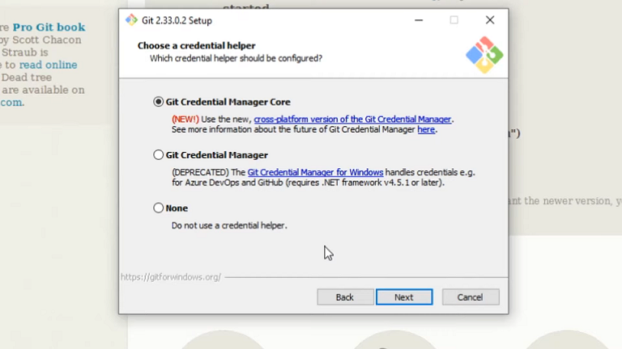

Git is a software developed by the famous Linus Torvalds on 2005 to help your team on developing Linux kernel. But, this software widely used today for code versioning. So, Git is a distribuited version controller. Is a very powerful tool.
Installing Git Software
Git is a open–source software, so is very easy to find, install and run. Here you have the link to download the last Git version. Since you have downloaded it, just clik on the installer and follow his instructions. Note : When the installer ask about Credential helper you must choose option Git Credential Manager Core.

Git commands
Above is a list of useful commands on Git sotware. I make this notes along the Digital Innovation One Bootcamp. This commands are used on Windows system.
ls = lists the current dictory contents
cd = change diretory
cd .. = change dictory one level back
git init = initiates git on current directory
git add = add archives to "Staged" mode
git commit -m = commit archives who are on "Staged" mode, you can also write a message, like a comment
mv = move archives to other dictory
mkdir = create a dictory
rm = remove file
pwd = list completed dictory path
git push origin = push archives to git remote directory
git config --list = list git current configuration
git config --unset = delete one defined configuration
git status = list current status of the work tree, tells to you if some archive have changed state
git remote add origin = add one specified remote repository, used on GitHub
git remote -v = list remote repositories added on local workstation
I have a lot to learn about Git and GitHub, this commands are just a little list. As i continue learning about it, i will add new commands on this page.